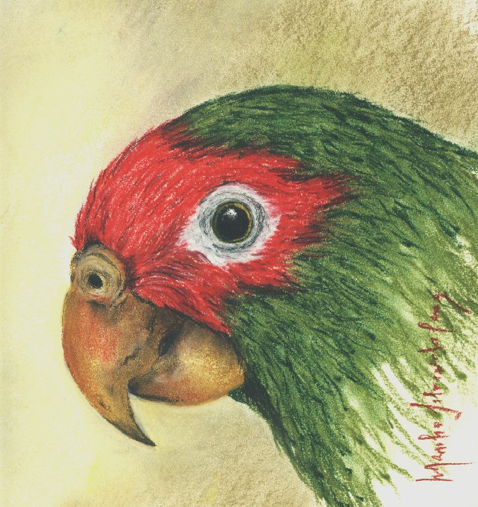

"Senhor das coxilhas"
Marília Cruz
Lápis Pastel Seco em
Papel Canson
Acervo CEPEN
O olhar vivaz que a obra traduz,
captou a essência desta inteligente ave.
O Papagaio-charão, Amazona
pretrei, pelas mãos de Marília Cruz, sem dúvida
teve em si,
crescidas atenções
e elevadas considerações diante de sua figura.
Agradecemos muito, em seu nome,
se é que podemos, à esta sensível e contemporânea
artista,
por utilizar seu talento e
um pouco do seu precioso tempo à esta espécie.